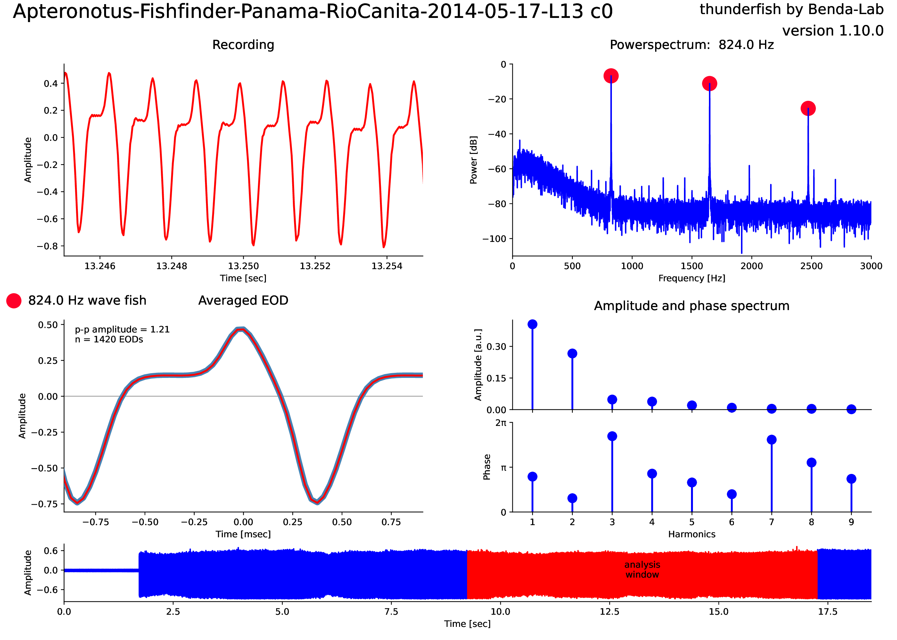

ThunderFish
Algorithms and programs for analysing electric field recordings of weakly electric fish.
Weakly electric fish generate an electric organ discharge (EOD). In wave-type fish the EOD resembles a sinewave of a specific frequency and with higher harmonics. In pulse-type fish EODs have a distinct waveform and are separated in time. The thunderfish package provides algorithms and tools for analysing both wavefish and pulsefish EODs.

Installation
ThunderFish is available from PyPi. Simply run:
pip install thunderfish
This should also install: - ThunderLab - AudioIO
Software
The thunderfish package provides the following software:
thunderfish: Detect, analyze, and plot all EOD waveforms in short recordings. Simply run ```shthunderfish data/Apteronotus-Fishfinder-Panama-RioCanita-2014-05-17-L13.wav ``` To produce the image shown above. Read more
collectfish: Collect data generated bythunderfish.eodexplorer: View and explore properties of EOD waveforms.audianthunder: audian with thunderfish integrated as analysis tool.thunderlogger: Extract EOD waveforms from logger recordings.
Various viewers
They will eventually be replaced by some plugins for audian.
fishfinder: Browse EOD recordings and detect EOD frequencyies on the fly.thunderbrowse: Browse multi-channel EOD recordings.
Data
In data/you find a view recordings on which you can run thunderfish
software.
You find more fishfinder recordings for rigorous testing in the pulseeods repository that has been assembled by Liz Weerdmeester.
Algorithms
The following modules provide the algorithms for analyzing EOD recordings. Look into the modules for more information.
Input/output
hopkinsloader: Load EODs from Hopkins files.
EOD analysis
bestwindow: Select the region within a recording with the most stable signal of largest amplitude that is not clipped.checkpulse: Check whether a pulse-type or a wave-type weakly electric fish is present in a recording.consistentfishes: Create a list of EOD frequencies with fishes present in all provided fish lists.eodanalysis: Analyse EOD waveforms.harmonics: Extract and analyze harmonic frequencies from power spectra.pulses: Extract and cluster EOD waverforms of pulse-type electric fish.
EOD simulations
fakefish: Simulate EOD waveforms.efield: Simulations of spatial electric fields.fishshapes: Manipulate and plot fish outlines.